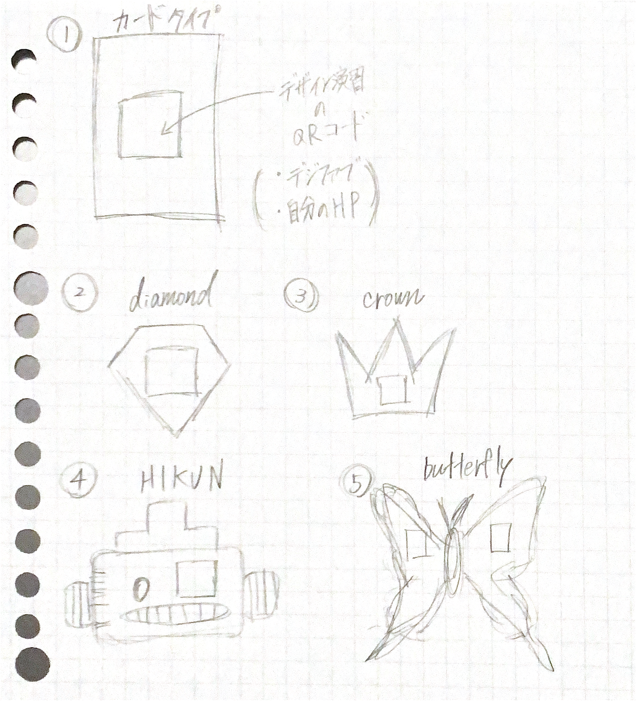
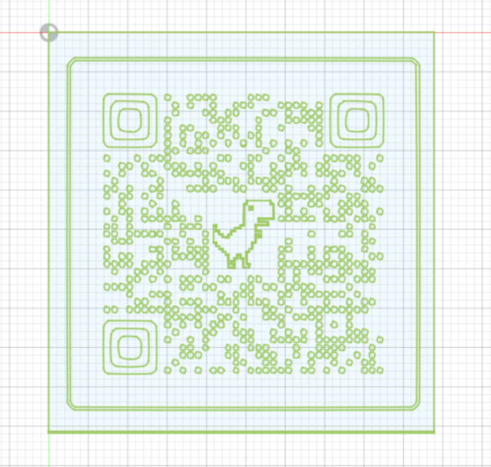
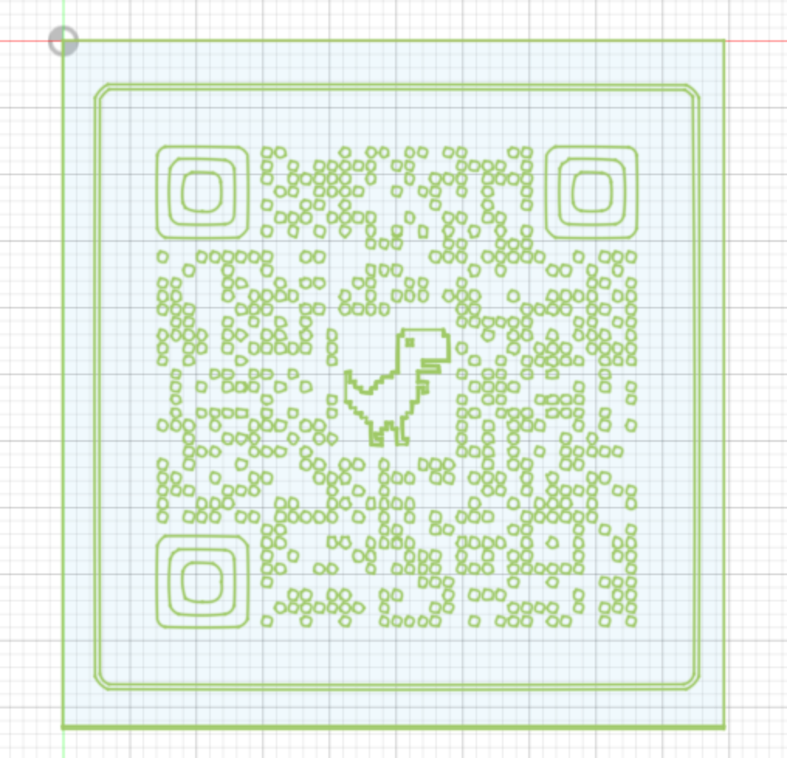

Computer-Controlled Cutting
1.[作品のタイトル]
木製表札
2.[デザイン]

3.[作品の説明]
以前考えていた作品は授業のHPと自分のHPのQRコードだったが正直実用性がないと思った為変更することに。
そこでお試しな感じで
わたしが住んでいる場所では防犯のために表札を玄関に付けていない家が多い。私の家もそのうちの一人だ。
そこで自分の家に表札を付けてみたらどの様な感じになるのか気になったのがきっかけだ。
苗字が割と珍しいため漢字表記は避けたいと思いローマ字にした。また、番地が分かるように苗字の下には番地も記載。
苗字の部分が透けるデザインなので、外壁によって柄が変わると面白いかなと思った。
4.[反省点]
↓変更する前の作品↓
1.[作品のタイトル]
Web用QRコード
2.[デザイン]

3.[作品の説明]
授業用のホームページ「デザイン演習」と「デジタルファブリケーション」をスマホで開くのが面倒だった為。
そんな時にQRコードにすれば読み取るだけで開くので便利だと思った。
お財布やバッグから取り出しやすいようにスリムでコンパクトなデザイン。
4.[反省点]
先生が仰っていたように時間がなく完成させることができなかった。
必ず完成させたいので時間がある時に作りに行こうと思う。
Digital

Design
XBPのHP
